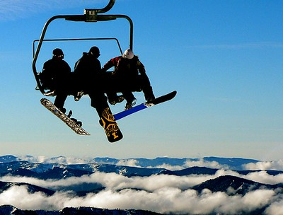
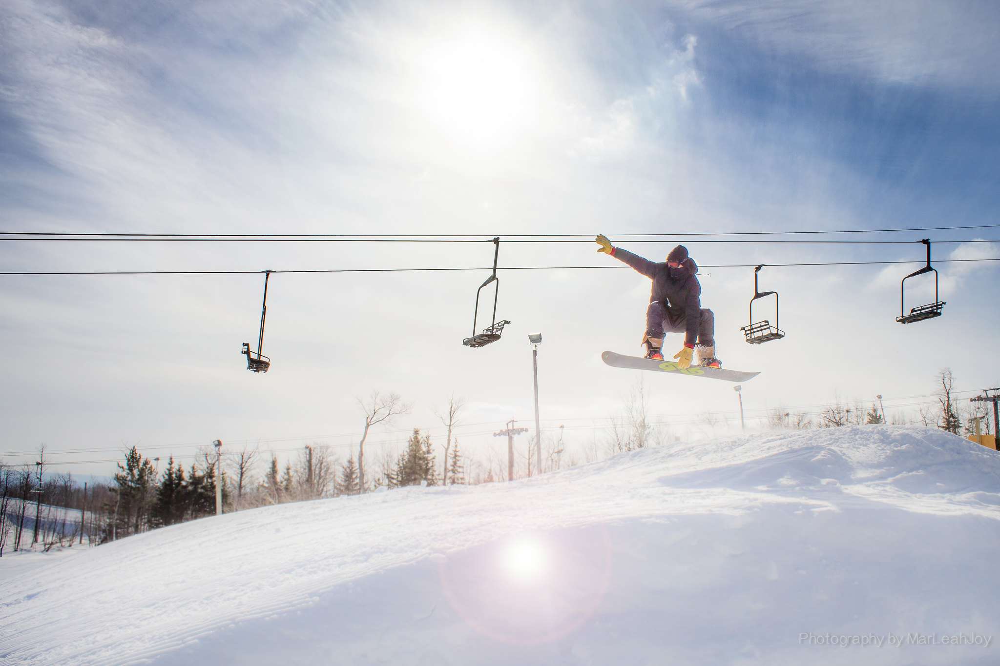
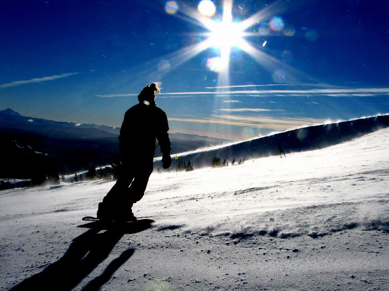
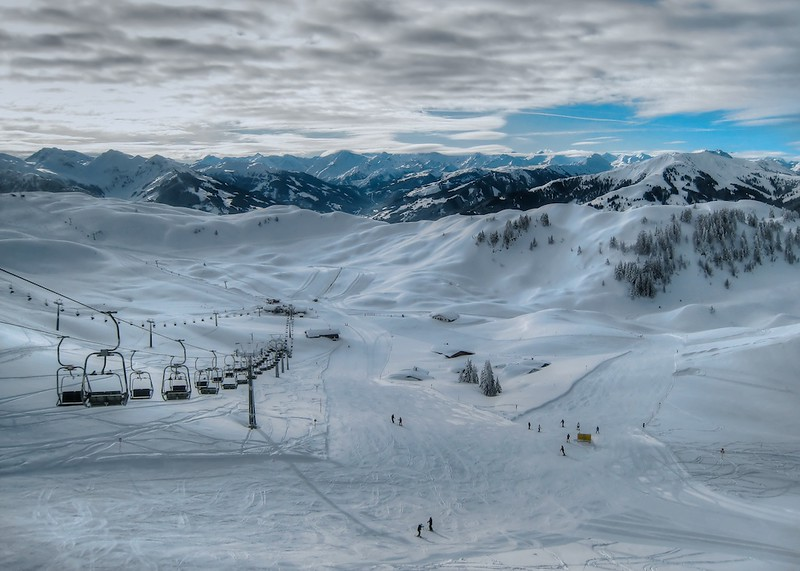
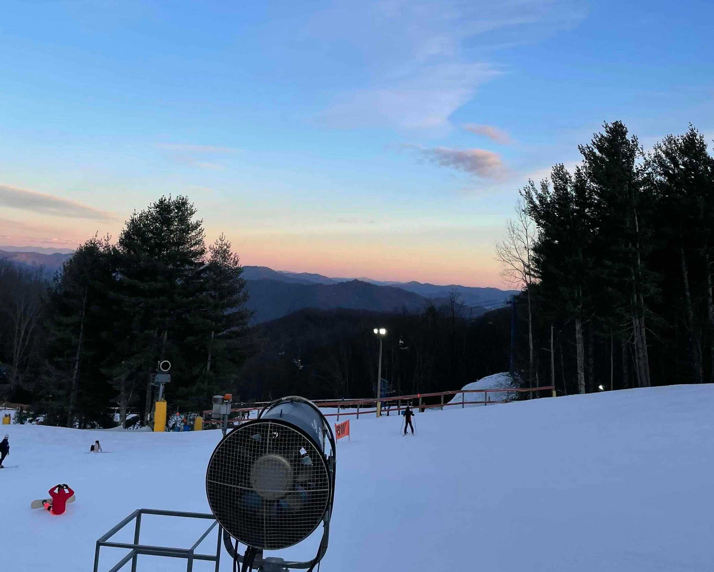
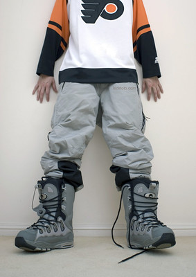
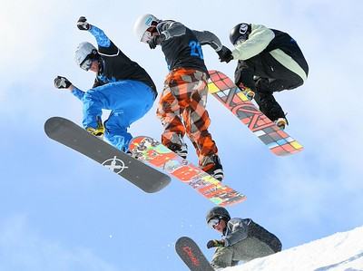
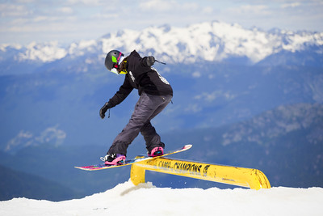

"Snowboarders At Timberline" by frozenchipmunk is licensed under CC BY 2.0
My name is Jack Henley and something I really enjoy doing when it's cold out is snowboarding. Snowboarding is an awesome hobby, because anyone can do it. Although it may be intimidating for beginners who've only seen professionals doing crazy tricks, it's actually a very approachable hobby to anybody interested. I personally grew up in Louisiana, and therefore was not able to get into snowboarding until I moved to Western North Caronlina about four years ago. However, something that I find special about snowboarding, is that it's fun no matter what stage of learning you're at!

"Snowboarding" by MarLeah Joy is licensed under CC BY 2.0

"Snowboarding" by _ambrown is licensed under CC BY-NC 2.0.
Snowboarding is a hobby that takes advantage of snowfall in mountainous areas. While people who snowboard are constantly innovating new ways to enjoy the hobby, at its core, snowboarding allows you to feel a way that's incomparable while shredding down your mountain of choice. The best way I can describe the sensation of snowboarding is what I imagine it feels like to fly. Because the bottom of your board is usually waxed, the contact between your board and the snow feels practically frictionless, and allows you to descend down mountains with speed.
Inspiration for the ASCII snowboard animation.
"Winter" by @Doug88888 is licensed under CC BY-NC-SA 2.0
Snowboarding is obviously best enjoyed in the winter, assuming you're in North America. However, beyond that, there are actually some times of the winter that are better than others for snowboarding. In my opinion, the most ideal time to snowboard on the east coast is late January to early Febuary. This is because any snow that's fallen has had time to layer on top of previous snowfalls, which makes it much more pleasant to snowboard on. While it can be nice to go even later in the season, once it starts warming up, it's much more common to find ice on the mountainside, which can lead to pretty gnarly wipeouts if you're not expecting it.

As mentioned previously, I do most of my snowboarding on the east coast. Since I live in Western NC, one of my favorite places to go is Cataloochee Ski Area. This location offers a vast amount of runs for all skill levels, and usually doesn't get too crowded.
Getting into snowboarding is pretty easy, but it can be a little intimidating at first. One of the best ways to get started is to find a local ski resort that offers snowboard rentals and lessons. However, this approach can be expensive, which can be a barrier, especially if you're not sure if snowboarding is something you want to commit to yet. Furtheromre, while it is convienient to rent gear, most of the time, rental snowboarding gear is not well maintained, which can make it feel more challenging than it should. A more effective option is to find a used board and pair of boots. This will allow you to practice on your own time, and allow you to get used to the feel of your specific gear. Once you have your own gear, the next step is to find somewhere to use it. I recommend finding somehwere that offers discounts, which can be super helpful, especially if you're a student.

"D3 Snowboard Boots" by kikfoto is licensed under CC BY-ND 2.0

"Getting air off the Wu-Tang in the Men's Snowboard Boardercross Finals - The Brits, Laax 2010" by bobaliciouslondon is licensed under CC BY 2.0.
Everyone has their own reasons for enjoying snowboarding. Snowboarding can serve as a nice way to connect with nature and stay active during cold winter months. For others, snowboarding offers a convienient way to get an adrenaline rush and have fun with friends. Regardless of your reasons, snowboarding is undoubtedly a fun and rewarding hobby that can be enjoyed by people of all ages and skill levels. One of the most satisfying parts of snowboarding is just how good it feels to realize that your skill has improved. When you first start snowboarding, even just making it down a beginner slope without falling can feel like a huge accomplishment. As you progress, you'll find that you can take on more challenging terrain, and eventually start learning tricks. Each new skill you master can give you a great sense of achievement and keep you motivated to keep improving.

"Camp of Champions Snowboard Camp 171" by Camp of Champions is licensed under CC BY 2.0 .
Can you make me webpage structured with six disctinct sections such that it ... looks like each section is its own webpage. It should have sections called w ... ho, what, when, where, how, why, and AI prompts. Each section should have an ... h2 heading. The header/nav should contain links to each section that allow ... us to switch between sections quickly. The use of CSS/JS should make it so t ... hat only the selected section is visible at a time (like a single-page app). ... The 'what (home)' page should be the default visible page. - Gemma3:8b local
Can you modify this webpage such that each section takes up the entirety of the screen and appears as a single webpage? Can you also modify this webpage so that the nav links allow us to switch to different sections. -Claude Haiku 4.5 (VS-Code Copilot)
Are you familliar with the famous c-donut program?
Do you think it
would be possible to make a similar program that animates a custom ascii
which I could embed in my website in a paragraph element? Claude Sonnet
4.6
Do you think you can make a custom snowboard-themed cursor? Maybe a little guy on a snowboard, or just a snowboard itself. Claude Sonnet 4.6
Overall, I found AI models to be helpful in the foundational design of my webpage. I also found the use of AI to be helpful when it came to creating custom webpage elements, such as the snowboard ASCII animation, or the snowboarder cursor.